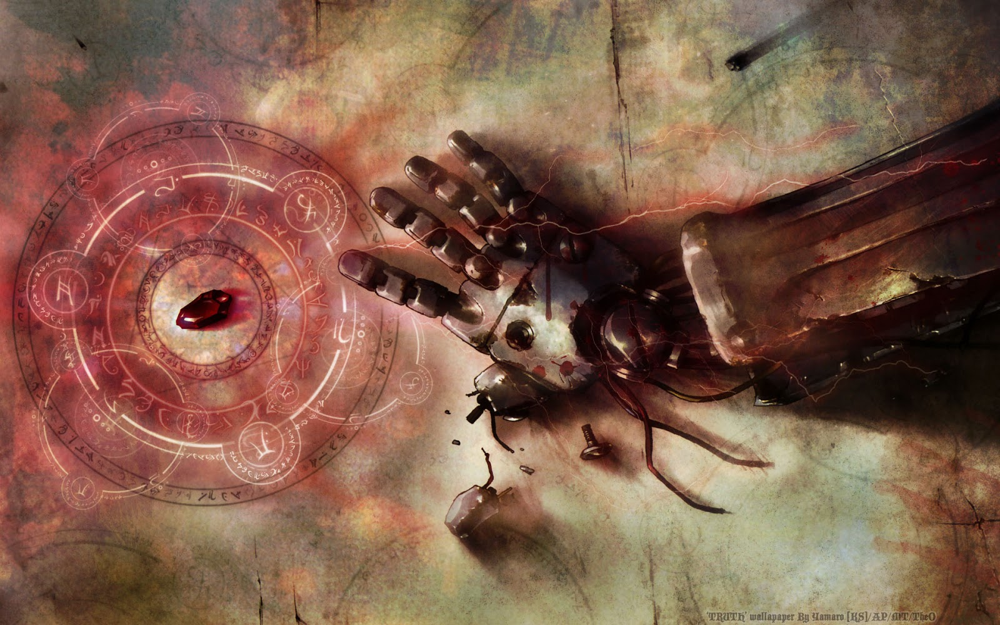

SINOPSE
O mundo de Fullmetal Alchemist é baseado no período após a Revolução Industrial Europeia. Situado em um universo ficcional em que a alquimia é uma das mais avançadas técnicas científicas conhecidas pelo homem, a história centra-se nos irmãos Edward Elric e Alphonse Elric, que estão procurando a pedra filosofal para restaurar seus corpos após uma desastrosa tentativa de trazer a mãe falecida de volta à vida através da alquimia.

HISTÓRIA
Edward e Alphonse Elric são dois irmãos alquimistas procurando o catalisador lendário chamado pedra filosofal, um objeto poderoso que lhes permite restaurar seus corpos (que foram perdidos numa tentativa de trazer sua mãe de volta à vida pelo uso da alquimia). Nascidos na aldeia de Resembool no país chamado Amestris, os dois irmãos viviam na aldeia com sua mãe Trisha Elric. O pai deles, Van Hohenheim, saiu de casa por razões desconhecidas, e anos mais tarde, sua mãe Trisha Elric morreu de uma doença incurável, deixando, portanto, os dois irmãos sozinhos. Após a morte de sua mãe, Edward decide ressuscitá-la através da alquimia, uma ciência avançada em que os objetos podem ser criados a partir de matérias-primas. Eles pesquisaram sobre Transmutação Humana, uma técnica proibida em que se tenta criar ou modificar um ser humano. Essa tentativa, todavia, fracassou e consequentemente Edward perdeu sua perna esquerda e Alphonse seu corpo inteiro. Numa tentativa desesperada de salvar seu irmão, Edward sacrifica seu braço direito para unir a alma de Alphonse a uma armadura. Alguns dias depois, um alquimista chamado Roy Mustang visita os irmãos Elric e propõe que Edward se torne um membro do Estado Militar de Amestris em troca de mais materiais de pesquisa para que eles possam encontrar uma maneira de recuperar seus corpos. Após isso, a perna esquerda e o braço direito de Edward são substituídos por um tipo avançado de prótese chamada de automail, construídas por sua amiga Winry Rockbell e sua avó Pinako.
Edward, então se torna um Alquimista Federal, um alquimista contratado pelo Estado Militar de Amestris, que aniquilou a maior parte da raça Ishibaliana na década passada. Ao se tornar um Alquimista Federal, ele passa a ter acesso aos vastos recursos disponíveis àqueles que exercem o cargo. Os irmãos partem em uma busca pela Pedra Filosofal como um meio de restaurar seus corpos. Ao longo de sua jornada, eles encontram aliados e inimigos, incluindo aqueles que estão dispostos a fazer qualquer coisa para obter a Pedra Filosofal: Scar, um dos poucos sobreviventes de Ishbal, que busca vingança contra os Alquimistas Federais pela destruição de sua raça; e os homúnculos, um grupo de criaturas parecidas com humanos que carregam pedaços da Pedra Filosofal dentro deles e que por isso tem a capacidade de sobreviver a quase qualquer dano.
À medida que a história progride, Edward e Alphonse descobrem que foram os homúnculos, que criaram e, secretamente, controlaram o Estado Militar de Amestris. Os homúnculos e grande parte dos oficiais de alta patente militar são comandados por de trás das cortinas pelo criador dos homúnculos, um homem conhecido simplesmente como "Pai", que ganhou a imortalidade através da Pedra Filosofal, que ele criou, enganando Hohenheim séculos antes do início da série. Ele planeja usar Amestris como um círculo de transmutação gigante, a fim de transmutar todo o país por razões desconhecidas pelos Elric. Quando Edward e Alphonse descobrem os planos de Pai, eles, juntamente com outros membros do Estado Militar, partem para derrotá-lo.